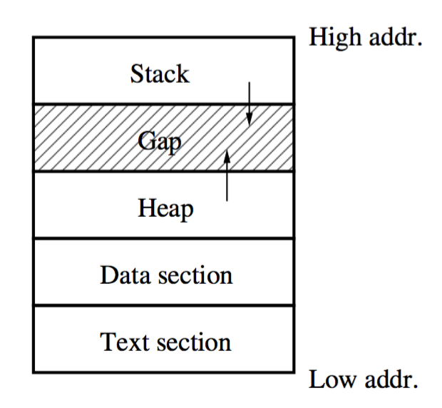
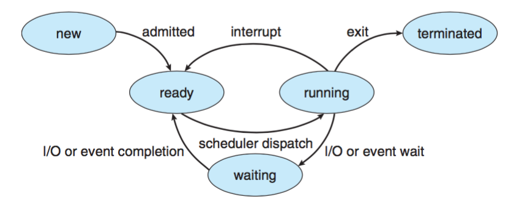
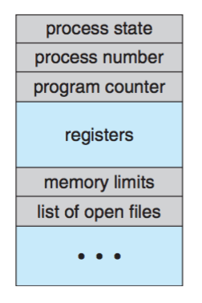
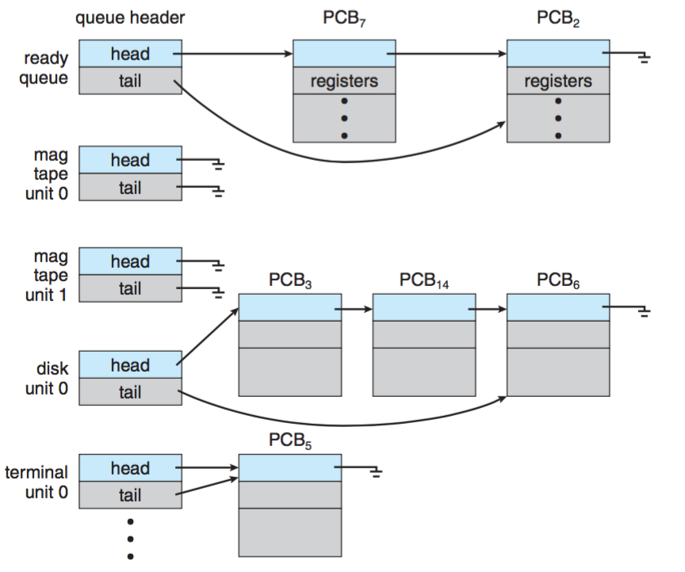
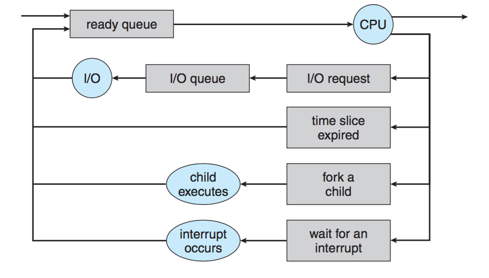

操作系统笔记04 进程管理
进程概念
流程批处理系统出现之前：工作
多程序或分时：程序或任务
进程：正在运行的作业/程序/任务的抽象
**
进程**是执行中的程序，形成所有计算机的基础。
- 一个过程不仅仅是一个程序。它包括
- 文本段：可执行的机器代码 /程序代码
- 数据段：包括全局变量
- 当前活动：通过程序计数器的值和处理器寄存器的内容表示
- 堆栈段：包含临时数据，如函数参数，返回地址和局部变量
- (如果需要的话)堆：进程运行期间动态地分配内存
- 许多其他资源，如打开的文件等 
- 程序只是被动实体，如存储在磁盘上包含一系列指令的文件内容(可执行文件)
- 进程时活动实体，它有一个程序计数器用来表示一个要执行的命令和相关资源的合集。
- 多个进程可能运行同一程序。尽管它们共享相同的文本段，但它们被当作两个独立的执行程序，数据段、堆、堆栈段不同。
进程状态
- 当一个进程执行时，它会改变状态。过程的状态由其当前活动定义。
- 每个进程可能处于以下状态之一：
- 新建：进程正在被创建。
- 运行：指令正在被执行。
- 等待：进程正在等待某个事件发生(如 I/O 完成或收到信号)。
- 就绪：进程等待分配处理器。
- 终止：进程完成执行。
- 随着进程的运行，它将从当前状态转换到另一个状态。这五个状态中有六个过渡。 
进程块
- 每个进程在操作系统中由过程控制块（PCB）表示，也称为任务控制块。
- 进程号是进程的唯一标识符，也称为PID。
- 程序计数器（PC）：是寄存器之一。
- CPU调度信息：包括进程的优先级、调度队列的指针和其它调度参数。 
进程调度
当运行进程因某种原因无法继续时，操作系统必须决定下一个要运行的进程。进程调度选择一个可用的进程到CPU上执行。
上下文切换
- 上下文切换：将 CPU 转向另一个进程需要保存当前进程的状态，并载入为新进程存储的状态。
- 是额外的开销。操作系统越复杂，上下文切换需要做的工作越多。
- 上下文切换时间与硬件支持有密切相关。根据处理器的不同。
- 上下文切换是一个性能瓶颈，程序员正在使用新的结构来尽可能地避免它。
调度队列
- 作业队列：由系统中的所有进程组成;
- 就绪队列：由等待CPU执行的进程组成;
- 操作系统也有其他队列。
- I/O 设备队列：由等待特定 I/O设备的进程组成。  
调度程序
调度程序从就绪队列中选择一个进程并为其分配CPU。我们称这个调度程序为CPU调度程序。
合作进程
- 如果一个进程不会影响系统中其它的进程，而且也不被其它进程影响，那么它是一个独立进程。不与其它进程共享数据(临时的或长久的)的进程是独立进程。
- 如果一个进程会影响系统中其它的进程而且也被影响，那么它是一个协作进程。与其它进程共享数据的进程是协作进程。
- 进程协作的优点
- 信息共享：多个进程可能需要同一条信息。
- 计算加速：将问题分解成几个可以并行运行的子任务;
- 模块化：通过设计将不同功能分散到进程中。
- 但是，协作进程的并发执行需要允许进程彼此通信并使其动作同步的机制。
生产者-消费者问题
- 这是协作进程的通用范例。
- 生产者进程产生信息以供消费者进程消费。必须要又一个缓冲来被生产者填充并被消费者所使用。
- 无限缓冲：对缓冲大小没有限制。消费者可能不得不等待新项，但生产者总可以产生新项。
- 有限缓冲：缓冲大小固定。如果缓冲为空，消费者必须等待；如果缓冲为满，生寒症必须等待。
- 操作系统可以通过使用进程间通信（IPC）工具来提供缓冲区。程序员只是使用系统调用来填充或清空缓冲区。
- 缓冲区也可以位于生产者和消费者可以访问的共享存储器中。在这种情况下，程序员必须自己管理共享缓冲区。
进程间通信(IPC)
- 在消费者-生产者问题中，缓冲区可以由操作系统提供。操作系统必须同步消费者和生产者对缓冲区的访问。
- 进程间通信(IPC)提供了一种机制，允许进程进行通信，并在非共享相同地址空间的情况下同步他们的动作。
- eg.①Message-passing, ②pipe, ③socket, etc.
All articles in this blog are licensed under CC BY-NC-SA 4.0 unless stating additionally.